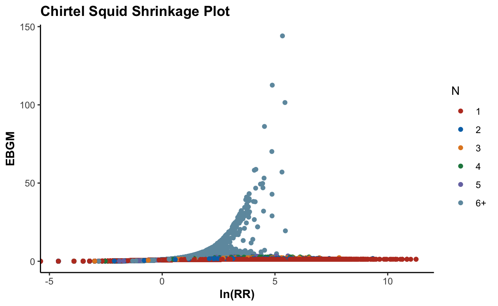
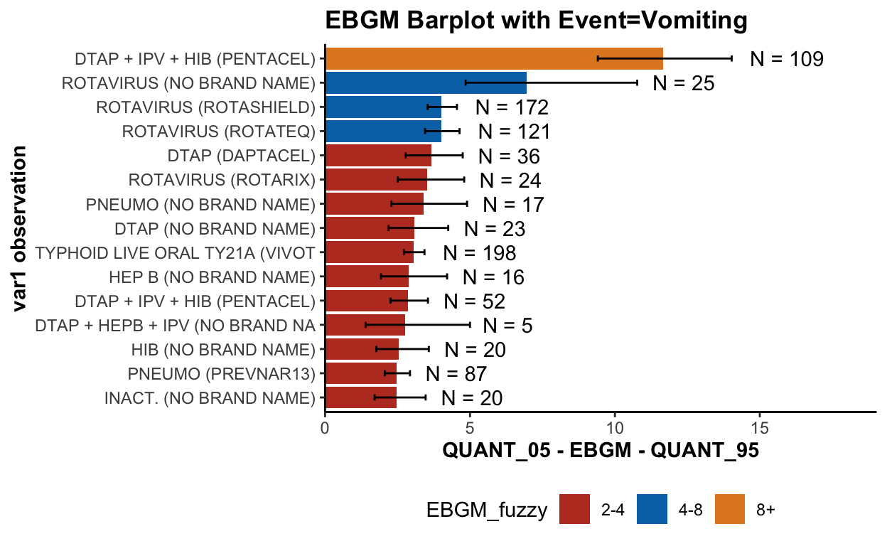
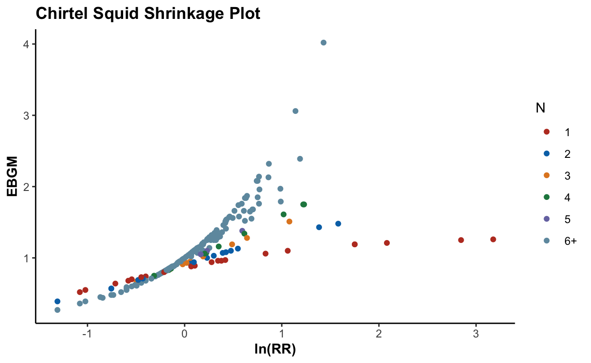

Calculate actual counts (N), expected counts (E) of each vaccine-symptom combination, relative reporting ratio (RR), and proportional reporting ratio (PRR) using age + gender stratification to control potential confounding effects:
library("openEBGM")
library("magrittr")
library("kableExtra")
df_p <- readRDS("data-processed/df.rds") %>%
processRaw(stratify = TRUE, zeroes = FALSE)
# stratification variables used: strat_age, strat_gender
# there were 12 strata: <= 2-Female, <= 2-Male, <= 2-Unknown, > 65-Female, > 65-Male, > 65-Unknown, 18 - 65-Female, 18 - 65-Male, 18 - 65-Unknown, 2 - 18-Female, 2 - 18-Male, 2 - 18-Unknown Sanity check:
df_p %>% head()
var1 var2 N E RR
1 ADENOVIRUS (NO BRAND NAME) Arthralgia 1 0.119480157 8.37
2 ADENOVIRUS (NO BRAND NAME) Dyspnoea 1 0.083668035 11.95
3 ADENOVIRUS (NO BRAND NAME) Face oedema 1 0.011163701 89.58
4 ADENOVIRUS (NO BRAND NAME) Gait disturbance 1 0.014375342 69.56
5 ADENOVIRUS (NO BRAND NAME) Osteoarthritis 1 0.005387014 185.63
6 ADENOVIRUS (NO BRAND NAME) Petechiae 1 0.002717102 368.04
PRR
1 16.26
2 17.43
3 86.42
4 67.12
5 296.72
6 212.56
# var1 var2 N E RR PRR
# 1 ADENOVIRUS (NO BRAND NAME) Arthralgia 1 0.119480157 8.37 16.26
# 2 ADENOVIRUS (NO BRAND NAME) Dyspnoea 1 0.083668035 11.95 17.43
# 3 ADENOVIRUS (NO BRAND NAME) Face oedema 1 0.011163701 89.58 86.42
# 4 ADENOVIRUS (NO BRAND NAME) Gait disturbance 1 0.014375342 69.56 67.12
# 5 ADENOVIRUS (NO BRAND NAME) Osteoarthritis 1 0.005387014 185.63 296.72
# 6 ADENOVIRUS (NO BRAND NAME) Petechiae 1 0.002717102 368.04 212.56Save processed data to file:
df_p %>% saveRDS(file = "data-processed/df_p.rds")
df_p <- readRDS("data-processed/df_p.rds")
squashed <- squashData(df_p, bin_size = 100, keep_pts = 0)
squashed <- squashData(squashed, count = 2, bin_size = 12)
library("foreach")
library("doParallel")
registerDoParallel(parallel::detectCores())
suppressMessages(library("DEoptim"))
set.seed(2020)
theta_hat <- DEoptim(
negLLsquash,
lower = c(rep(1e-05, 4), 0.001),
upper = c(rep(5, 4), 1 - 0.001),
control = DEoptim.control(
itermax = 500,
reltol = 1e-04,
steptol = 200,
NP = 100,
CR = 0.85,
F = 0.75,
trace = 25,
parallelType = 2
),
ni = squashed$N, ei = squashed$E, wi = squashed$weight
)
Iteration: 25 bestvalit: 325555.202871 bestmemit: 0.014104 0.116785 1.749330 1.712070 0.101938
Iteration: 50 bestvalit: 325354.375330 bestmemit: 0.002284 0.113023 2.013934 1.947101 0.094070
Iteration: 75 bestvalit: 325347.784248 bestmemit: 0.000153 0.115025 2.093288 2.020985 0.097340
Iteration: 100 bestvalit: 325347.575191 bestmemit: 0.000036 0.116657 2.103292 2.031426 0.099336
Iteration: 125 bestvalit: 325347.567304 bestmemit: 0.000010 0.116819 2.103899 2.031816 0.099493
Iteration: 150 bestvalit: 325347.567208 bestmemit: 0.000010 0.116802 2.103769 2.031757 0.099480
Iteration: 175 bestvalit: 325347.567205 bestmemit: 0.000010 0.116798 2.103761 2.031760 0.099474
Iteration: 200 bestvalit: 325347.567205 bestmemit: 0.000010 0.116799 2.103766 2.031765 0.099474
Iteration: 225 bestvalit: 325347.567205 bestmemit: 0.000010 0.116799 2.103766 2.031764 0.099475
# Iteration: 25 bestvalit: 325555.202871 bestmemit: 0.014104 0.116785 1.749330 1.712070 0.101938
# Iteration: 50 bestvalit: 325354.375330 bestmemit: 0.002284 0.113023 2.013934 1.947101 0.094070
# Iteration: 75 bestvalit: 325347.784248 bestmemit: 0.000153 0.115025 2.093288 2.020985 0.097340
# Iteration: 100 bestvalit: 325347.575191 bestmemit: 0.000036 0.116657 2.103292 2.031426 0.099336
# Iteration: 125 bestvalit: 325347.567304 bestmemit: 0.000010 0.116819 2.103899 2.031816 0.099493
# Iteration: 150 bestvalit: 325347.567208 bestmemit: 0.000010 0.116802 2.103769 2.031757 0.099480
# Iteration: 175 bestvalit: 325347.567205 bestmemit: 0.000010 0.116798 2.103761 2.031760 0.099474
# Iteration: 200 bestvalit: 325347.567205 bestmemit: 0.000010 0.116799 2.103766 2.031765 0.099474
# Iteration: 225 bestvalit: 325347.567205 bestmemit: 0.000010 0.116799 2.103766 2.031764 0.099475Check \(\hat{\theta}\):
theta_hat <- as.numeric(theta_hat$optim$bestmem)
theta_hat
[1] 1.000001e-05 1.167989e-01 2.103766e+00 2.031764e+00 9.947457e-02
# 1.000001e-05 1.167989e-01 2.103766e+00 2.031764e+00 9.947457e-02Save to file:
saveRDS(theta_hat, file = "data-processed/theta_hat.rds")
df_p <- readRDS("data-processed/df_p.rds")
squashed <- squashData(df_p, bin_size = 100, keep_pts = 0)
squashed <- squashData(squashed, count = 2, bin_size = 12)
theta_hat <- readRDS("data-processed/theta_hat.rds")
qn <- Qn(theta_hat, N = df_p$N, E = df_p$E)
head(qn)
[1] 5.391214e-06 6.031719e-06 8.479922e-06 8.312731e-06 8.803126e-06
[6] 8.963224e-06
identical(length(qn), nrow(df_p))
[1] TRUE
summary(qn)
Min. 1st Qu. Median Mean 3rd Qu. Max.
0.0000018 0.0000027 0.0000036 0.0010325 0.0000056 1.0000000
df_p$ebgm <- ebgm(theta_hat, N = df_p$N, E = df_p$E, qn = qn)
head(df_p) %>% kable() %>% kable_styling()| var1 | var2 | N | E | RR | PRR | ebgm |
|---|---|---|---|---|---|---|
| ADENOVIRUS (NO BRAND NAME) | Arthralgia | 1 | 0.1194802 | 8.37 | 16.26 | 1.22 |
| ADENOVIRUS (NO BRAND NAME) | Dyspnoea | 1 | 0.0836680 | 11.95 | 17.43 | 1.24 |
| ADENOVIRUS (NO BRAND NAME) | Face oedema | 1 | 0.0111637 | 89.58 | 86.42 | 1.28 |
| ADENOVIRUS (NO BRAND NAME) | Gait disturbance | 1 | 0.0143753 | 69.56 | 67.12 | 1.28 |
| ADENOVIRUS (NO BRAND NAME) | Osteoarthritis | 1 | 0.0053870 | 185.63 | 296.72 | 1.29 |
| ADENOVIRUS (NO BRAND NAME) | Petechiae | 1 | 0.0027171 | 368.04 | 212.56 | 1.29 |
df_p$QUANT_05 <- quantBisect(
5,
theta_hat = theta_hat,
N = df_p$N, E = df_p$E, qn = qn
)
df_p$QUANT_95 <- quantBisect(
95,
theta_hat = theta_hat,
N = df_p$N, E = df_p$E, qn = qn
)
head(df_p) %>% kable() %>% kable_styling()| var1 | var2 | N | E | RR | PRR | ebgm | QUANT_05 | QUANT_95 |
|---|---|---|---|---|---|---|---|---|
| ADENOVIRUS (NO BRAND NAME) | Arthralgia | 1 | 0.1194802 | 8.37 | 16.26 | 1.22 | 0.41 | 3.00 |
| ADENOVIRUS (NO BRAND NAME) | Dyspnoea | 1 | 0.0836680 | 11.95 | 17.43 | 1.24 | 0.41 | 3.05 |
| ADENOVIRUS (NO BRAND NAME) | Face oedema | 1 | 0.0111637 | 89.58 | 86.42 | 1.28 | 0.42 | 3.15 |
| ADENOVIRUS (NO BRAND NAME) | Gait disturbance | 1 | 0.0143753 | 69.56 | 67.12 | 1.28 | 0.42 | 3.15 |
| ADENOVIRUS (NO BRAND NAME) | Osteoarthritis | 1 | 0.0053870 | 185.63 | 296.72 | 1.29 | 0.42 | 3.17 |
| ADENOVIRUS (NO BRAND NAME) | Petechiae | 1 | 0.0027171 | 368.04 | 212.56 | 1.29 | 0.43 | 3.17 |
Suspicious pair with EBGM05 > 5, which are clearly reporting signals:
suspicious <- df_p[df_p$QUANT_05 >= 5, ]
nrow(suspicious)
[1] 311
nrow(df_p)
[1] 166220
nrow(suspicious) / nrow(df_p)
[1] 0.001871014
suspicious <- suspicious[order(suspicious$QUANT_05, decreasing = TRUE), c("var1", "var2", "N", "E", "QUANT_05", "ebgm", "QUANT_95")]
head(suspicious, 5) %>% kable() %>% kable_styling()| var1 | var2 | N | E | QUANT_05 | ebgm | QUANT_95 | |
|---|---|---|---|---|---|---|---|
| 73892 | INFLUENZA (SEASONAL) (FLUCELVAX) | Product use issue | 57 | 0.2753666 | 115.19 | 144.07 | 178.40 |
| 131701 | ROTAVIRUS (ROTASHIELD) | Gastrointestinal haemorrhage | 94 | 0.7136427 | 94.70 | 112.59 | 133.06 |
| 72211 | INFLUENZA (SEASONAL) (FLUBLOK QUADRIVALENT) | Product administered to patient of inappropriate age | 141 | 1.5132541 | 74.88 | 86.19 | 98.82 |
| 48195 | HPV (CERVARIX) | Product use issue | 22 | 0.0950984 | 70.29 | 101.47 | 142.71 |
| 73652 | INFLUENZA (SEASONAL) (FLUCELVAX) | Drug administered to patient of inappropriate age | 350 | 5.8868353 | 53.27 | 58.21 | 63.52 |
tabbed <- table(suspicious$var1)
head(tabbed[order(tabbed, decreasing = TRUE)]) %>% kable() %>% kable_styling()| Var1 | Freq |
|---|---|
| SMALLPOX (ACAM2000) | 35 |
| LYME (LYMERIX) | 34 |
| ROTAVIRUS (ROTATEQ) | 21 |
| HPV (GARDASIL) | 14 |
| SMALLPOX (DRYVAX) | 13 |
| INFLUENZA (SEASONAL) (FLUMIST QUADRIVALENT) | 12 |
txt <- paste0(
1:nrow(suspicious),
". After controlling for the confounding effects from age and gender, the reporting of the adverse reaction ",
suspicious$var2,
" for vaccine ",
suspicious$var1,
" is disproportionately high compared to this same event for all other vaccines, with ",
suspicious$N,
" total reports and an EBGM05 score ",
suspicious$QUANT_05,
"."
)
txt[1:5]
# [1] 1. After controlling for the confounding effects from age and gender,
the reporting of the adverse reaction Product use issue for vaccine
INFLUENZA (SEASONAL) (FLUCELVAX) is disproportionately high compared
to this same event for all other vaccines, with 57 total reports and
an EBGM05 score 115.19.
# [2] 2. After controlling for the confounding effects from age and gender,
the reporting of the adverse reaction Gastrointestinal haemorrhage for
vaccine ROTAVIRUS (ROTASHIELD) is disproportionately high compared to
this same event for all other vaccines, with 94 total reports and
an EBGM05 score 94.7.
# [3] 3. After controlling for the confounding effects from age and gender,
the reporting of the adverse reaction Product administered to patient
of inappropriate age for vaccine INFLUENZA (SEASONAL) (FLUBLOK QUADRIVALENT)
is disproportionately high compared to this same event for all other
vaccines, with 141 total reports and an EBGM05 score 74.88.
# [4] 4. After controlling for the confounding effects from age and gender,
the reporting of the adverse reaction Product use issue for vaccine HPV
(CERVARIX) is disproportionately high compared to this same event for all
other vaccines, with 22 total reports and an EBGM05 score 70.29.
# [5] 5. After controlling for the confounding effects from age and gender,
the reporting of the adverse reaction Drug administered to patient of
inappropriate age for vaccine INFLUENZA (SEASONAL) (FLUCELVAX) is
disproportionately high compared to this same event for all other
vaccines, with 350 total reports and an EBGM05 score 53.27.In the top-ranked vaccine-adverse event pairs, we find some commonly reported adverse reactions that are can be mostly attributed to human errors or logistical issues, such as:
Wrong product administered
Wrong technique in drug usage process
Drug administered to patient of inappropriate age
Product distribution issueThis indicates a possibility to future improve the administer process for or improving the product labeling for certain types of vaccines.
Certain cases also indicates some data quality issues. For example, No adverse event is not an actual adverse event, but was included in the VAERS database, and Product use issue is a term that is too generic to be meaningfully interpreted. Such findings could be helpful in guiding the improvement of the upstream reporting data quality and the data ingestion procedures.
df_p <- readRDS("data-processed/df_p.rds")
squashed <- squashData(df_p, bin_size = 100, keep_pts = 0)
squashed <- squashData(squashed, count = 2, bin_size = 12)
theta_hat <- readRDS("data-processed/theta_hat.rds")
est <- list("estimates" = theta_hat)
names(est$estimates) <- c("alpha1", "beta1", "alpha2", "beta2", "P")
# for the 5th and 95th percentiles
ebout <- ebScores(
df_p,
hyper_estimate = est,
quantiles = c(5, 95)
)
print(ebout, threshold = 10)
There were 123 var1-var2 pairs with a QUANT_05 greater than 10
Top 5 Highest QUANT_05 Scores
var1
73892 INFLUENZA (SEASONAL) (FLUCELVAX)
131701 ROTAVIRUS (ROTASHIELD)
72211 INFLUENZA (SEASONAL) (FLUBLOK QUADRIVALENT)
48195 HPV (CERVARIX)
73652 INFLUENZA (SEASONAL) (FLUCELVAX)
var2 N
73892 Product use issue 57
131701 Gastrointestinal haemorrhage 94
72211 Product administered to patient of inappropriate age 141
48195 Product use issue 22
73652 Drug administered to patient of inappropriate age 350
E QUANT_05
73892 0.27536662 115.19
131701 0.71364266 94.70
72211 1.51325411 74.88
48195 0.09509842 70.29
73652 5.88683526 53.27Global might not be very helpful:
plot(ebout, plot.type = "histogram")
plot(ebout, plot.type = "shrinkage")
Focus on a specific type of adverse event:
plot(ebout, event = "Vomiting")
plot(ebout, plot.type = "histogram", event = "Vomiting")
plot(ebout, plot.type = "shrinkage", event = "Vomiting")